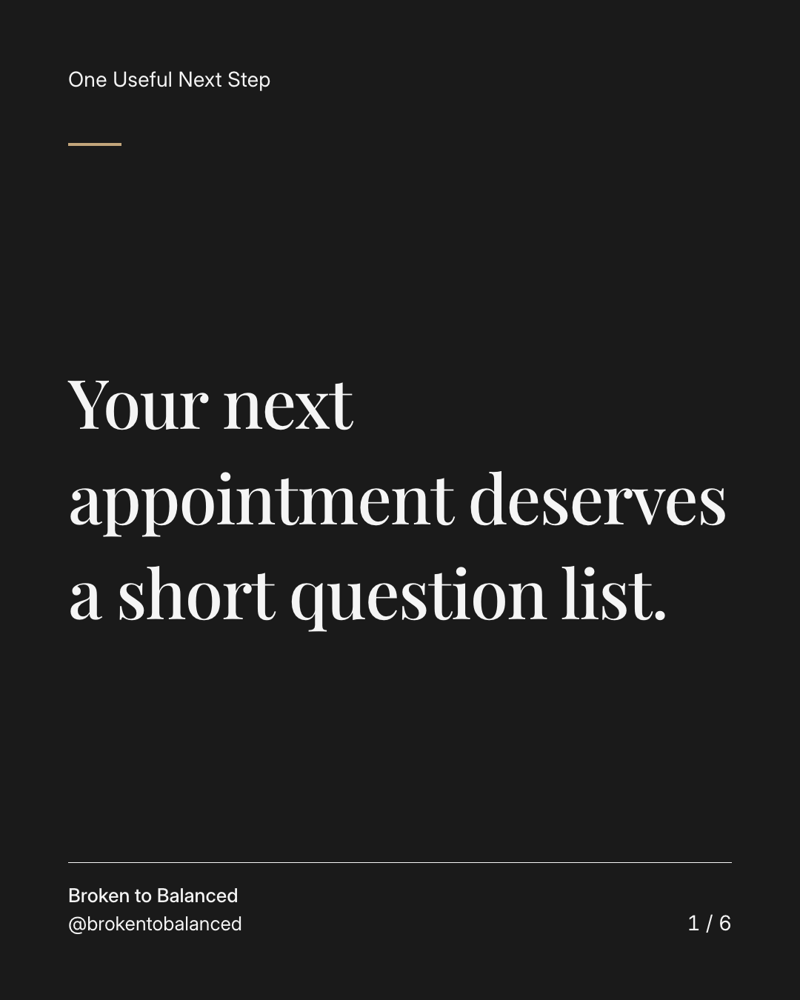
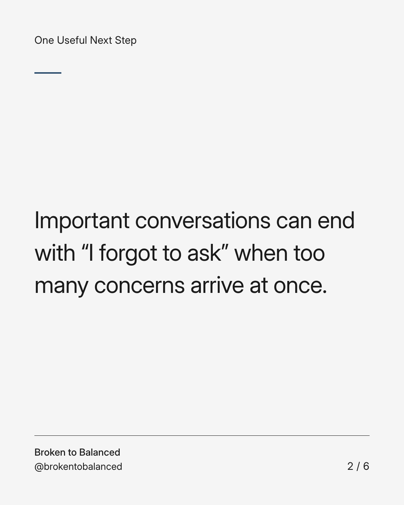
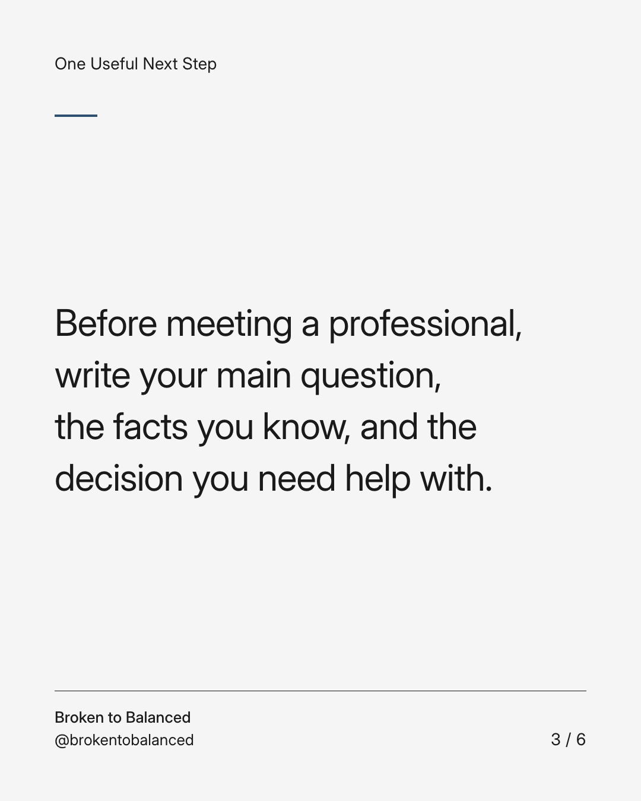
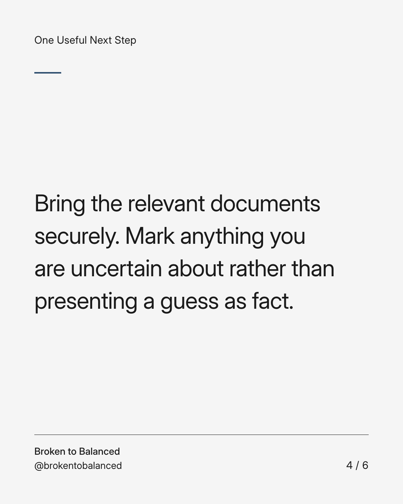
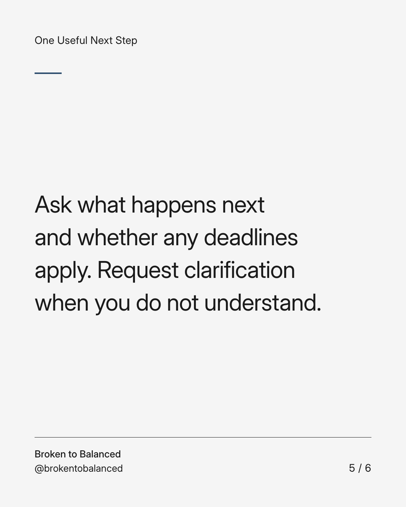
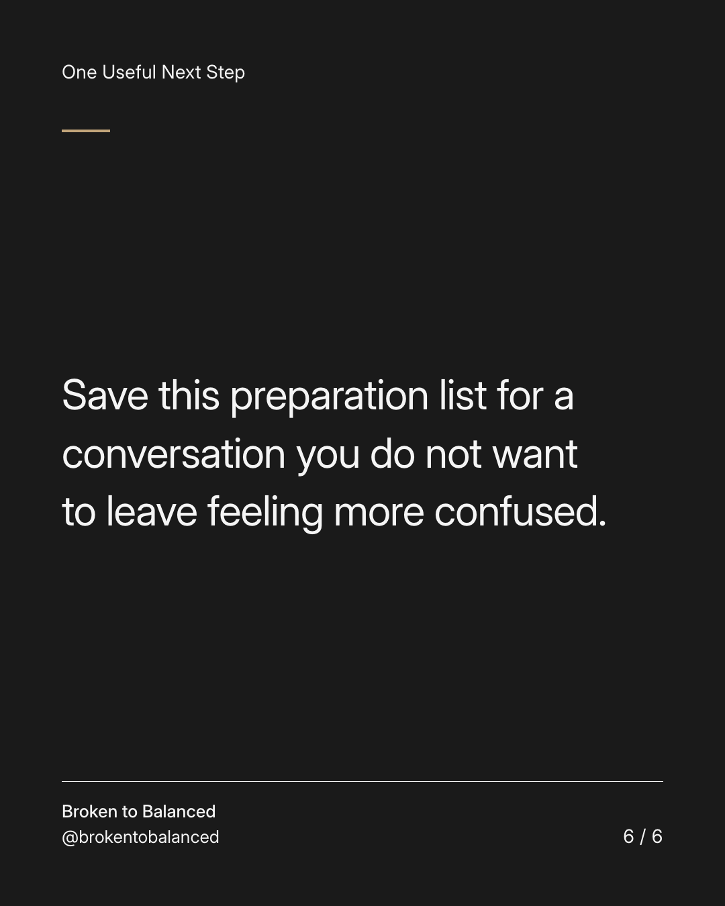

Exact text and accessibility text
Your next appointment deserves a short question list.
Slide 1 of 6. Your next appointment deserves a short question list.


Exact text and accessibility text
Important conversations can end with “I forgot to ask” when too many concerns arrive at once.
Slide 2 of 6. Important conversations can end with “I forgot to ask” when too many concerns arrive at once.


Exact text and accessibility text
Before meeting a professional, write your main question, the facts you know, and the decision you need help with.
Slide 3 of 6. Before meeting a professional, write your main question, the facts you know, and the decision you need help with.


Exact text and accessibility text
Bring the relevant documents securely. Mark anything you are uncertain about rather than presenting a guess as fact.
Slide 4 of 6. Bring the relevant documents securely. Mark anything you are uncertain about rather than presenting a guess as fact.


Exact text and accessibility text
Ask what happens next and whether any deadlines apply. Request clarification when you do not understand.
Slide 5 of 6. Ask what happens next and whether any deadlines apply. Request clarification when you do not understand.


Exact text and accessibility text
Save this preparation list for a conversation you do not want to leave feeling more confused.
Slide 6 of 6. Save this preparation list for a conversation you do not want to leave feeling more confused.
Exact caption
Plain-text fallback: select and copy the caption.